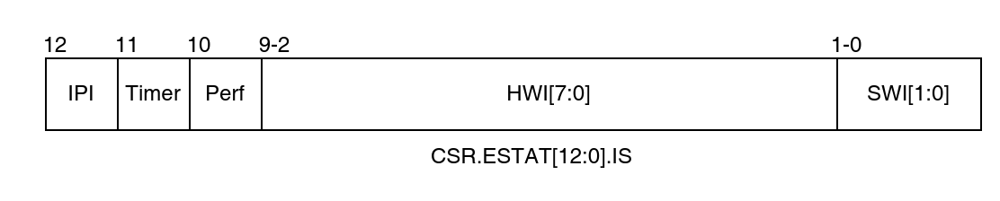

LoongArch 中断控制
由于龙芯不同处理器/开发板的中断控制器各自设计不同（嵌入式处理器如2K1000有自己的中断控制器设计，3系处理器则有7A1000和7A2000桥片负责外部中断控制），本文IO中断部分主要对最新的龙芯7A2000桥片内的中断控制器进行介绍[1]。
CPU中断
LoongArch的中断配置由CSR.ECFG控制，龙芯架构下的中断采用线中断的形式，每个处理器核内部可以记录 13 个线中断。这些中断包括：1 个核间中断（IPI），1 个定时器中断（TI），1 个性能监测计数溢出中断（PMI），8 个硬中断（HWI0~HWI7），以及 2 个软中断（SWI0~SWI1）。所有线中断均为电平中断，并且都是高电平有效[3]。

- 核间中断：来自核外的中断控制器，被记录在
CSR.ESTAT.IS[12]位。 - 定时器中断：源自核内的恒定频率定时器，当计时至全 0 值时触发，并被记录在
CSR.ESTAT.IS[11]位。清除方法是通过软件向CSR.TICLR寄存器的TI位写 1。 - 性能计数器溢出中断：源自核内的性能计数器，当任一开启中断使能的性能计数器的第 63 位为 1 时触发，并记录在
CSR.ESTAT.IS[10]位。清除方法是将引起中断的性能计数器的第 63 位清 0 或关闭该性能计数器的中断使能。 - 硬中断：来自处理器核外部的中断控制器，8 个硬中断
HWI[7:0]被记录在CSR.ESTAT.IS[9:2]位。 - 软中断：来自处理器核内部，通过软件指令对
CSR.ESTAT.IS[1:0]写 1 置起，写 0 清除。
中断在 CSR.ESTAT.IS 域中记录的位置的索引值也被称为中断号（Int Number）。例如，SWI0 的中断号为 0，SWI1 的中断号为 1，依此类推，IPI 的中断号为 12。
传统IO中断

上图是3A系列处理器+7A系列桥片的中断系统示意图。图中表示了两种中断方式的过程，上部表示的是通过中断线INTn0来中断，下部表示的是通过HT消息包来中断。
设备（除了工作在MSI模式的PCIe设备）发出的中断intX送给7A内部中断控制器，经过中断路由后送到桥片引脚或者转换成HT消息包发给3A的HT控制器，3A的中断控制器通过外部中断引脚或者HT控制器中断接收到该中断，并经过中断路由中断某个处理器核[1]。
龙芯3A5000芯片的传统 IO 中断支持32个中断源，以统一方式进行管理，如下图所示。 任意一个IO中断源可以被配置为是否使能、触发的方式、以及被路由的目标处理器核中断脚。传统中断不支持中断的跨片分发，只能中断同一个处理器片内的处理器核[2]。

拓展IO中断
除了兼容原有的传统 IO 中断方式，3A5000 开始支持扩展 I/O 中断，用于将 HT 总线上的 256 位中断直接分发给各个处理器核，而不再通过 HT 的中断线进行转发，提升 IO 中断使用的灵活性[2]。
参考资料
[1] 龙芯中科技术股份有限公司.龙芯7A2000桥片用户手册.V1.0.第5章.
[2] 龙芯中科技术股份有限公司.龙芯3A5000/3B5000处理器寄存器使用手册-多核处理器架构、寄存器描述与系统软件编程指南.V1.3.第11章.
[3] 龙芯中科技术股份有限公司.龙芯架构参考手册.卷一：基础架构.